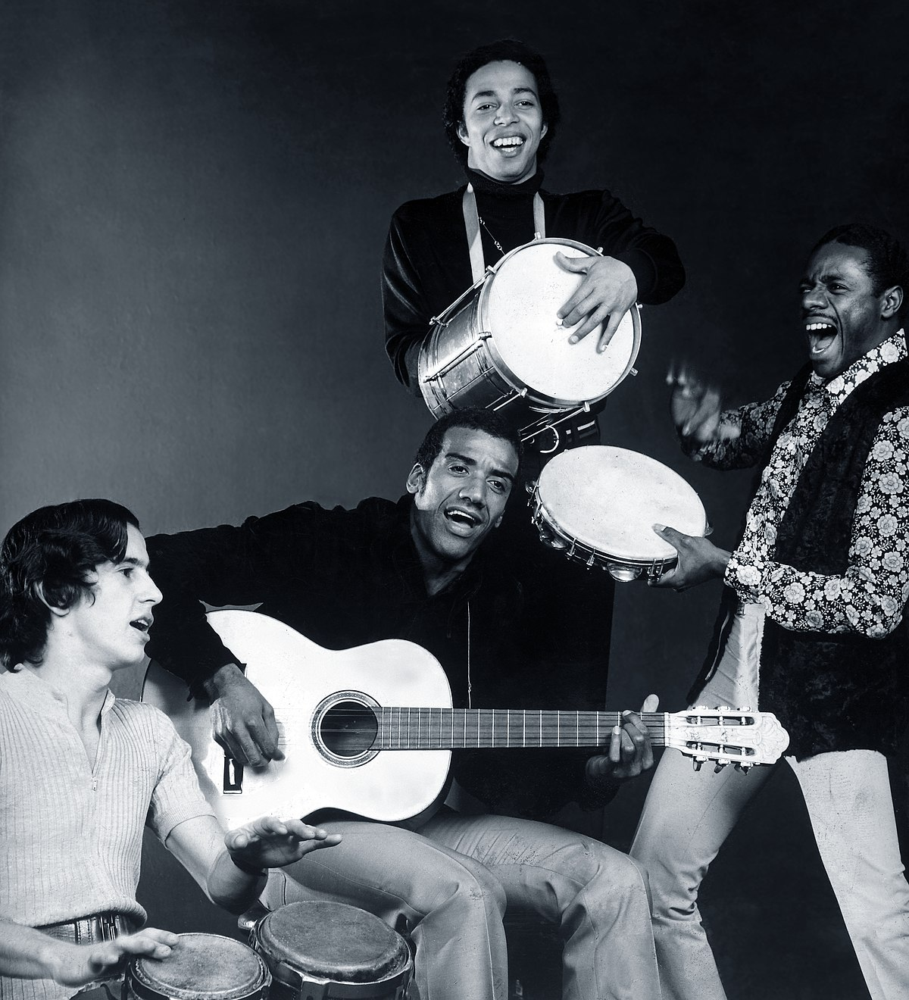

galeria

O movimento do tropicalismo foi um movimento brasileiro criado no final da década de 60. Era um movimento cultural do povo brasileiro, que era manifestado principalmente atráves da música,mas também se manifestava através do teatro, cinema e artes. Seus principais artistas eram Caetano Veloso, Rita Lee, Gal Costa e Guilherme Gil.